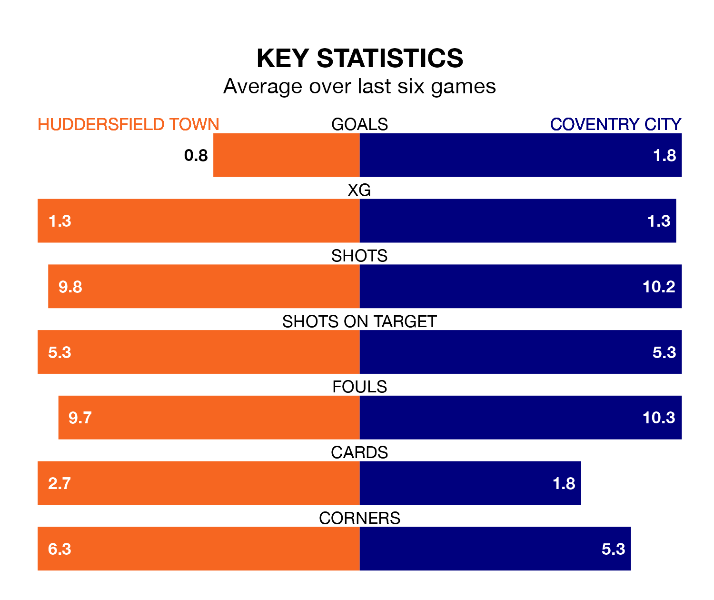

Coventry City travel to Huddersfield Town on Friday in EFL Championship.
The visitors come into the game on the back of a win in their last match, having beaten Watford 2-1 away, with goals from Haji Wright.
The Terriers, meanwhile, drew their last match, 0-0 against Rotherham United.
Huddersfield are 22nd in the table after 38 games, of which they have won eight and drawn 15, earning 39 points.
Coventry are 14 places ahead of Town in eighth, with 15 wins and 12 draws putting them on 57 points.
With 42 goals in 38 games so far this season, the Terriers are scoring at below the league average rate with 1.1 goals per game. And they are conceding more than average, letting in 61 goals at a rate of 1.6 per game.
City, meanwhile, are above average scorers, with 1.6 goals per game, compared to a league average of 1.4. They have conceded 1.2 goals per game.
In the last 10 years, Huddersfield and Coventry have played each other on seven occasions. Huddersfield won one of them, Coventry two, and they drew four times.
On average, the Terriers scored 0.7 goals and the Sky Blues 1.4 in those matches.
Their last meeting was on September 25, when they played out a 1-1 draw.
The home side are in disappointing form in EFL Championship, with one win and two draws from their last six games.
With three wins and a draw over that period, the Sky Blues' form is better – they have taken 10 points from 18, compared to Huddersfield's five.
In Wright, the visitors have one of the league's most on-form strikers so far this season. He has notched 13 goals in 35 appearances, to sit sixth in the scoring charts.
His goal rate of one every 170 minutes is quicker than that of Michal Helik, Huddersfield's top scorer with a goal every 323 minutes, and a total of nine goals in 33 games.
Updated: 12:39 (UTC), 26/03/24